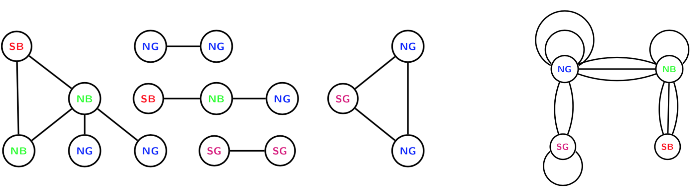
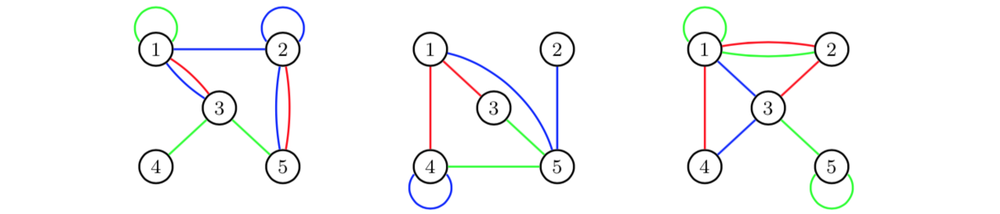
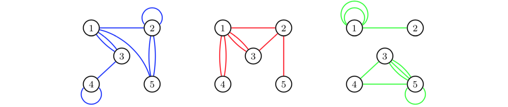
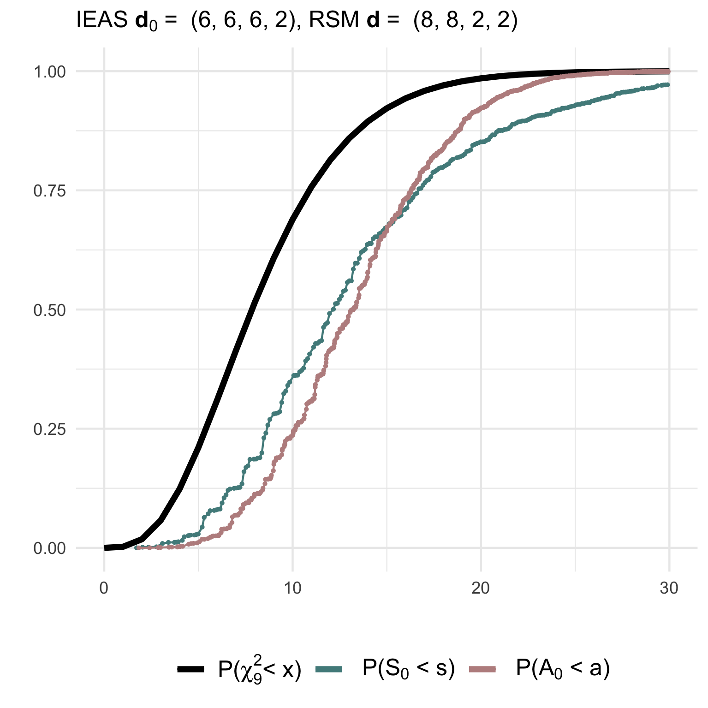
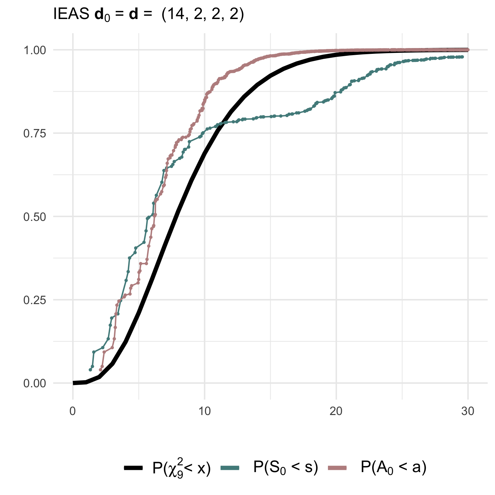
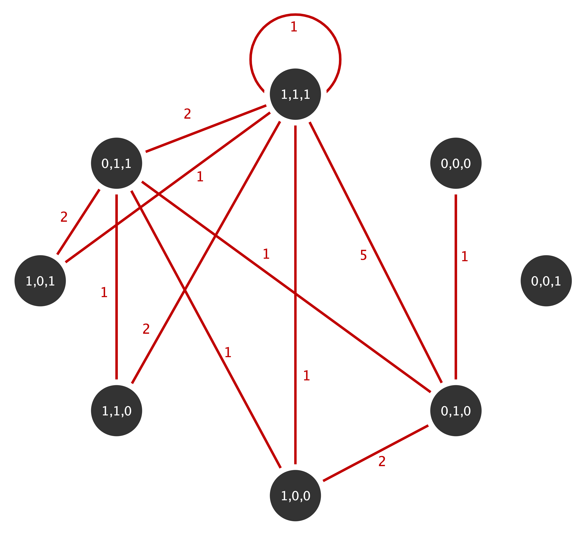

library('multigraphr')Multigraph Representation of Network Data
Project summary
Multigraphs are network representations in which multiple edges and edge loops (self edges) are permitted. Multigraph data structure can be observed directly but the possibility to obtain multigraphs using blocking, aggregation and scaling makes them widely applicable.
For the past decade, I’ve been working on a statistical framework for analyzing network data using this representation. I have developed different multigraph multigraph models and derived several statistics under these models that can be used to analyse local and global network properties in order to convey important social phenomena and processes. The latest contribution in this framework is formal goodness of fit tests for the developed probability models for random multigraphs.
The proposed framework is in full implemented in the R package ‘multigraphr’ and a description of various functions implemented in the package are given in the following. More details are provided in the package vignetteand the references listed.
R package multigraphr
Package overview


This package introduces the multigraph framework for analyzing social network data. Brief description of various functions implemented in the package are given in the following but more details are provided in the package vignettes and the references listed.
Installation
You can install the released version of multigraphr from CRAN with:
install.packages("multigraphr")The development version from GitHub with:
# install.packages("devtools")
devtools::install_github("termehs/multigraphr")Multigraphs and applicability
Multigraphs are network representations in which multiple edges and edge loops (self edges) are permitted. These data structures can be either directly observed or aggregated by classifying or cross-classifying node attributes into meta nodes. For the latter case, within group edges correspond to self-edges. See example below where the original graph with 15 nodes and 12 edges (left) is aggregated based on node categories into a small multigraph with 4 nodes (right).

Edge aggregation can also be used to obtain multigraphs. Assume that we study a graph with three different types of relations over three periods of time: 
If we aggregate over time periods, we obtain for each edge category a multigraph for the total time period of three days:

For more details on these kinds of aggregations, see Shafie (2015;2016).
Multigraph representation of network data
Multigraphs are represented by their edge multiplicity sequence M with elements M(i,j), denoting the number of edges at vertex pair sites (i,j) ordered according to (1,1) < (1,2) <···< (1,n) < (2,2) < (2,3) <···< (n,n), where n is number of nodes. The number of vertex pair sites is given by r = n(n+1)/2.
Random multigraph models
Two probability models for generating undirected random multigraphs are implemented in the package together with several statistics under these two models. Moreover, functions for goodness of fit tests are available for the presented models.
Note that some of the functions are only practical for small scale multigraphs.
The first model is obtained by random stub matching (RSM) given observed degree sequence of a multigraphs, so that edge assignments to vertex pair sites are dependent. The second is obtained by independent edge assignments (IEA) according to a common probability distribution. There are two ways in which an approximate IEA model can be obtained from an RSM model, thus facilitating the structural analysis. These two ways are
independent stub assignment (ISA)
independent edge assignment of stubs (IEAS)
(Shafie, 2016).
Example
Consider a small graph on 3 nodes and the following adjacency matrix:
A <- matrix(c(1, 1, 0,
1, 2, 2,
0, 2, 0),
nrow = 3, ncol = 3)
A [,1] [,2] [,3]
[1,] 1 1 0
[2,] 1 2 2
[3,] 0 2 0The degree sequence of the multigraph has double counted diagonals (edge stubs for loops) and is given by
D <- get_degree_seq(adj = A, type = 'graph')
D[1] 3 7 2so that number of edges in the multigraph is half the sum of the degree sequence which is equal to 6.
The RSM model given observed degree sequence shows the sample space consists of 7 possible multigraphs, as represented by their multiplicity sequence m.seq (each row correspond to the edge multiplicity sequence of a unique multigraph):
rsm_1 <- rsm_model(deg.seq = D)
rsm_1$m.seq M11 M12 M13 M22 M23 M33
1 1 1 0 3 0 1
2 1 1 0 2 2 0
3 1 0 1 3 1 0
4 0 3 0 2 0 1
5 0 3 0 1 2 0
6 0 2 1 2 1 0
7 0 1 2 3 0 0with probabilities associated with each multigraph, together with statistics ‘number of loops’, ‘number of multiple edges’ and ‘simple graphs or not’:
rsm_1$prob.dists prob.rsm loops multiedges simple
1 0.03030303 5 1 0
2 0.18181818 3 3 0
3 0.06060606 4 2 0
4 0.06060606 3 3 0
5 0.24242424 1 5 0
6 0.36363636 2 4 0
7 0.06060606 3 3 0Consider using the IEA model to approximate the RSM model so that edge assignment probabilities are functions of observed degree sequence. Note that the sample space for multigraphs is much bigger than for the RSM model so the multiplicity sequences are not printed (they can be found using the function get_edgemultip_seq for very small multigraphs and their probabilities can be found using the multinomial distribution). The following shows the number of multigraphs under either of the IEA models:
ieas_1 <- iea_model(adj = A , type = 'graph', model = 'IEAS', K = 0, apx = TRUE)
ieas_1$nr.multigraphs[1] 462Statistics to analyze structural properties
These statistics include number of loops (indicator of e.g. homophily) and number of multiple edges (indicator of e.g. multiplexity/interlocking), which are implemented in the package together with their probability distributions, moments and interval estimates under the different multigraph models.
Example (cont’d)
Under the RSM model, the first two moments and interval estimates of the statistics M1 = ‘number of loops’ and M2 = ‘number of multiple edges’ are given by
rsm_1$M M1 M2
Expected 2.273 3.727
Variance 0.986 0.986
Upper 95% 4.259 5.713
Lower 95% 0.287 1.741which are calculated using the numerically found probability distributions under RSM (no analytical solutions exist for these moments).
Under the IEA models (IEAS or ISA), moments of these statistics, together with the complexity statistic \(R_k\) representing the sequence of frequencies of edge sites with multiplicities 0,1,…,k, are found using derived formulas. Thus, there is no limit on multigraph size to use these. When the IEAS model is used to approximate the RSM model as shown above:
ieas_1$M M1 M2
Observed 3.000 3.000
Expected 2.273 3.727
Variance 1.412 1.412
Upper 95% 4.649 6.104
Lower 95% -0.104 1.351ieas_1$R R0 R1 R2
Observed 2.000 2.000 2.000
Expected 2.674 1.588 1.030
Variance 0.575 1.129 0.760
Upper 95% 4.191 3.713 2.773
Lower 95% 1.156 -0.537 -0.713When the ISA model is used to approximate the RSM model (see above):
isa_1 <- iea_model(adj = A , type = 'graph',
model = 'ISA', K = 0, apx = TRUE)
isa_1$M M1 M2
Observed 3.000 3.000
Expected 2.583 3.417
Variance 1.471 1.471
Upper 95% 5.009 5.842
Lower 95% 0.158 0.991isa_1$R R0 R1 R2
Observed 2.000 2.000 2.000
Expected 2.599 1.703 1.018
Variance 0.622 1.223 0.748
Upper 95% 4.176 3.915 2.748
Lower 95% 1.021 -0.509 -0.711The IEA models can also be used independent of the RSM model. For example, the IEAS model can be used where edge assignment probabilities are estimated using the observed edge multiplicities (maximum likelihood estimates):
ieas_2 <- iea_model(adj = A , type = 'graph',
model = 'IEAS', K = 0, apx = FALSE)
ieas_2$M M1 M2
Observed 3.000 3.000
Expected 3.000 3.000
Variance 1.500 1.500
Upper 95% 5.449 5.449
Lower 95% 0.551 0.551ieas_2$R R0 R1 R2
Observed 2.000 2.000 2.000
Expected 2.845 1.331 1.060
Variance 0.434 0.805 0.800
Upper 95% 4.163 3.125 2.849
Lower 95% 1.528 -0.464 -0.729The ISA model can also be used independent of the RSM model. Then, a sequence containing the stub assignment probabilities (for example based on prior belief) should be given as argument:
isa_2 <- iea_model(adj = A , type = 'graph',
model = 'ISA', K = 0, apx = FALSE, p.seq = c(1/3, 1/3, 1/3))
isa_2$M M1 M2
Observed 3.000 3.000
Expected 2.000 4.000
Variance 1.333 1.333
Upper 95% 4.309 6.309
Lower 95% -0.309 1.691isa_2$R R0 R1 R2
Observed 2.000 2.000 2.000
Expected 2.144 2.248 1.160
Variance 0.632 1.487 0.710
Upper 95% 3.734 4.687 2.845
Lower 95% 0.554 -0.190 -0.525The interval estimates can then be visualized to detect discrepancies between observed and expected values thus indicating social mechanisms at play in the generation of edges, and to detect interval overlap and potential interdependence between different types of edges (see Shafie 2015,2016; Shafie & Schoch 2021).
Goodness of fit tests
Goodness of fits tests of multigraph models using Pearson (S) and information divergence (A) test statistics under the random stub matching (RSM) and by independent edge assignments (IEA) model, where the latter is either independent edge assignments of stubs (IEAS) or independent stub assignment (ISA). The tests are performed using goodness-of-fit measures between the edge multiplicity sequence of a specified model or an observed multigraph, and the expected multiplicity sequence according to a simple or composite hypothesis.
Simulated goodness of fit tests
Probability distributions of test statistics, summary of tests, moments of tests statistics, adjusted test statistics, critical values, significance level according to asymptotic distribution, and power of tests can be examined using gof_sim given a specified model from which we simulate observed values from, and a null or non-null hypothesis from which we calculate expected values from. This in order to investigate the behavior of the null and non-null distributions of the test statistics and their fit to to asymptotic chi-square distributions.
Example
Simulated goodness of fit tests for multigraphs with n=4 nodes and m=10 edges.
(1) Testing a simple IEAS hypothesis with degree sequence (6,6,6,2) against a RSM model with degrees (8,8,2,2):
gof1 <- gof_sim(m = 10, model = 'IEAS', deg.mod = c(8,8,2,2),
hyp = 'IEAS', deg.hyp = c(6,6,6,2))(2) Testing a correctly specified simple IEAS hypothesis with degree sequence (14,2,2,2):
gof2 <- gof_sim(m = 10, model = 'IEAS', deg.mod = c(14,2,2,2),
hyp = 'IEAS', deg.hyp = c(14,2,2,2))The non-null (gof1) and null (gof2) distributions of the test statistics together with their asymptotic chi2-distribution can be visualized using ggplot2:
 
(3) Testing a composite IEAS hypothesis against a RSM model with degree sequence (14,2,2,2):
gof3 <- gof_sim(m = 10, model = 'RSM', deg.mod = c(14,2,2,2),
hyp = 'IEAS', deg.hyp = 0)(4) Testing a composite ISA hypothesis against a ISA model with degree sequence (14,2,2,2):
gof4 <- gof_sim(m = 10, model = 'ISA', deg.mod = c(14,2,2,2),
hyp = 'ISA', deg.hyp = 0)The non-null (gof3) and null (gof4) distributions of the test statistics can then be visualized as shown above to check their fit to the asymptotic χ²-distribution.
Performing the goodness of fit test on your data
Use function gof_test to test whether the observed data follows IEA approximations of the RSM model. The null hypotheses can be simple or composite, although the latter is not recommended for small multigraphs as it is difficult to detect a false composite hypothesis under an RSM model and under IEA models (this can be checked and verified using gof_sim to simulate these cases).
Non-rejection of the null implies that the approximations fit the data, thus implying that above statistics under the IEA models can be used to further analyze the observed network. Consider the following multigraph from the well known Florentine family network with marital. This multigraphs is aggregated based on the three actor attributes wealth (W), number of priorates (P) and total number of ties (T) which are all dichotomized to reflect high or low economic, political and social influence (details on the aggregation can be found in Shafie, 2015):

The multiplicity sequence represented as an upper triangular matrix for this mutigrpah is given by
flor_m <- t(matrix(c (0, 0, 1, 0, 0, 0, 0, 0,
0, 0, 0, 0, 0, 0, 0, 0,
0, 0, 0, 2, 0, 0, 1, 5,
0, 0, 0, 0, 0, 0, 1, 1,
0, 0, 0, 0, 0, 0, 1, 2,
0, 0, 0, 0, 0, 0, 2, 1,
0, 0, 0, 0, 0, 0, 0, 2,
0, 0, 0, 0, 0, 0, 0, 1), nrow= 8, ncol=8))The equivalence of adjacency matrix for the multigraph is given by
flor_adj <- flor_m+t(flor_m)
flor_adj [,1] [,2] [,3] [,4] [,5] [,6] [,7] [,8]
[1,] 0 0 1 0 0 0 0 0
[2,] 0 0 0 0 0 0 0 0
[3,] 1 0 0 2 0 0 1 5
[4,] 0 0 2 0 0 0 1 1
[5,] 0 0 0 0 0 0 1 2
[6,] 0 0 0 0 0 0 2 1
[7,] 0 0 1 1 1 2 0 2
[8,] 0 0 5 1 2 1 2 2with the diagonal representing the loops double counted (Shafie, 2016). The function get_degree_seq can now be used to find the degree sequence for this multigraph:
flor_d <- get_degree_seq(adj = flor_adj, type = 'multigraph')
flor_d[1] 1 0 9 4 3 3 7 13Now we test whether the observed network fits the IEAS or the ISA model. The \(p\)-values for testing whether there is a significant difference between observed and expected edge multiplicity values according to the two approximate IEA models are given in the output tables below. Note that the asymptotic χ²-distribution has \(r-1 = (n(n+1)/2) - 1 =35\) degrees of freedom.
flor_ieas_test <- gof_test(flor_adj, 'multigraph', 'IEAS', flor_d, 35)
flor_ieas_test Stat dof Stat(obs) p-value
1 S 35 15.762 0.998
2 A 35 18.905 0.988flor_isa_test <- gof_test(flor_adj, 'multigraph', 'ISA', flor_d, 35)
flor_isa_test Stat dof Stat(obs) p-value
1 S 35 16.572 0.997
2 A 35 19.648 0.983The results show that we have strong evidence for the null such that we fail to reject it. Thus, there is not a significant difference between the observed and the expected edge multiplicity sequence according on the two IEA models. Statistics derived under these models presented above can thus be used to analyze the structure of these multigraphs.
References
Shafie, T. (2015). A multigraph approach to social network analysis. Journal of Social Structure, 16. Link
Shafie, T. (2016). Analyzing local and global properties of multigraphs. The Journal of Mathematical Sociology, 40(4), 239-264. Link
Frank, O., Shafie, T., (2018). Random Multigraphs and Aggregated Triads with Fixed Degrees. Network Science, 6(2), 232-250. Link
Shafie, T., Schoch, D. (2021) Multiplexity analysis of networks using multigraph representations. Statistical Methods & Applications 30, 1425–1444. Link
Shafie, T. (2022). Goodness of fit tests for random multigraph models, Journal of Applied Statistics. Link